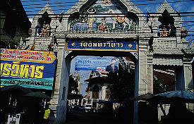
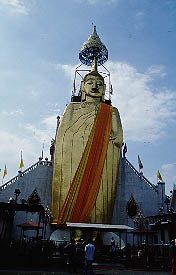
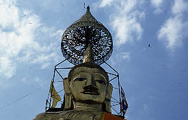
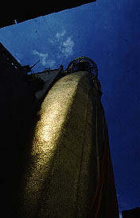
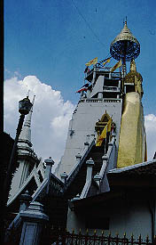
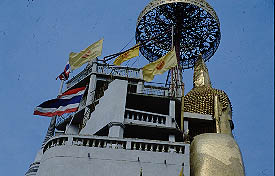
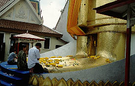

〜バンコクの大仏君〜
WatIndrawiharn/Bankok,thailand
ワットインドラヴィハーン/バンコク、タイ
バンコクの大仏君である。
政府機関の集まるバンコクのドゥシット地区の一画、ワットインドラヴィハーンというお寺の境内にある。

この大仏君、高さは40メートルあり、1824年につくられたそうである。
日本でいえば幕末の時期につくられたというから驚きである。
参拝客でごった返している本堂の前を抜け、大仏君の前にある広い芝生の広場からのビュー。
 
頭に乗せてある笠のような飾りがオシャレだ。
大仏君の両脇には階段があって上に登れるようになっている。早速階段を目指して横にまわってみる。
 
うっ、薄い！立像というもののこれじゃあ建物に張り付けたレリーフのでかい奴じゃないか。
大仏君自体はせいぜい4〜５メートルといったところだろう。しかしその後ろに控える建造物はかなり変な建物である。しかしこれは繰り返すが1824年の作である。日本では栄螺堂が3階建てで江戸の名所になっていた時代にこれだけの高層建築を造れる事自体タイの建築レベルの高度さに驚きだがそれ以上にこのインダストリアルなデザイン、如何であろうか。

江ノ島の植物園の塔を彷佛とさせる即物的な合体感覚、そこにタイの寺院建築様式と高層建築を無理にミックスさせたようなハイブリッドな建築物。
西洋でもモダンスタイルなどまだまだ、の時代に現れたポストモダン建築といえまいか。
従来のスケールを逸脱する大きいものをつくるとどこかデザインが破錠してしまう。あまたの大仏殿などが従来の建築様式の建物と大きく違ってしまうのはその大きさゆえなのだ。
ここの建物も同じ。そしてその面白さを味わうのが「大仏道」の極意なり。
 充実の土産物屋でゲットしたステッカー。その他、大仏レプリカなども。
充実の土産物屋でゲットしたステッカー。その他、大仏レプリカなども。
 大仏君の足である。皆さん花を供えて熱心に拝んでいる。
2001.1.
珍寺大道場 HOME